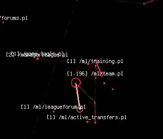

Computronium
Originally published at https://singularityhacker.com/computronium

Primes’ fingers raced across the keyboard like two mechanical spiders. His eyes did not look down; instead they burned holes into the space before him. A sneer spread across his face and turned into a scowl. Smack, smack, smack! His hands spasmodically beat the keyboard into submission. Cryptic messages appeared among Primes notifications. ‘Unauthorized access.’ ‘Username already in use.’ ‘Invalid API token.’ His movements did not slow. Prime leaned into the computer deck and he seemed to flex his jaw muscles. He looked like something between an angry Mexican drug boss and an Asperger receptionist. Smack, smack, smack!
Prime abruptly stopped and yelled: “eat it chode!” and hit the enter key. BOOM!! Vibration and rhythmic pounding filled the RV from floor to ceiling. High pitch electronic music pulses began to build and deep, fluttering vibrations of base rose from the floor. Projections of network routing diagrams and server geo-location data filled the virtual space within the RV. The walls seemed to expand to make the space seem much larger than it actually was. The further you looked into the simulated distance, the closer the virtual models became and more detail was revealed by the close up. It was a sea of data and computation being driven by the angry will of this dev.

The music hit a breaking point and the grinding sounds of a robotic apocalypse exploded. Then Computron spoke with power and finality: “Shell accessed. Script executing. Parent system admin rights in 3.. 2..”
Prime pointed a mock gun with index and forefingers and clicked an imaginary round into the server network model that had just zoomed into view before him. He folded his hands under his arms and leaned back in his chair waiting. That’s when it happened.
Excerpt from Computronium, A graphic novel set for 2014 release